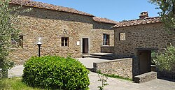

Leonardo da Vinci, properly named Leonardo di ser Piero da Vinci ("Leonardo, son of ser Piero from Vinci"), was born on 15 April 1452 in, or close to, the Tuscan hill town of Vinci, Italy 20 miles from Florence. He was born out of wedlock to Piero da Vinci (Ser Piero da Vinci d'Antonio di ser Piero di ser Guido; 1426–1504), a Florentine legal notary, and Caterina di Meo Lippi (c. 1434–1494), from the lower class. It remains uncertain where Leonardo was born; the traditional account, from a local oral tradition recorded by the historian Emanuele Repetti, is that he was born in Anchiano, a country hamlet that would have offered sufficient privacy for the illegitimate birth, though it is still possible he was born in a house in Florence that Ser Piero almost certainly had. Leonardo's parents both married separately the year after his birth. Caterina – who later appears in Leonardo's notes as only "Caterina" or "Catelina" – is usually identified as the Caterina Buti del Vacca, who married the local artisan Antonio di Piero Buti del Vacca, nicknamed L'Accattabriga, 'the quarrelsome one'. Having been betrothed to her the previous year, Ser Piero married Albiera Amadori and after her death in 1464, went on to have three subsequent marriages. From all the marriages, Leonardo eventually had 16 half-siblings (of whom 11 survived infancy) who were much younger than he (the last was born when Leonardo was 46 years old) and with whom he had very little contact.
Very little is known about Leonardo's childhood and much is shrouded in myth, partially because of his biography in the frequently apocryphal Lives of the Most Excellent Painters, Sculptors, and Architects (1550) by 16th-century art historian Giorgio Vasari.Tax records indicate that by at least 1457 he lived in the household of his paternal grandfather, Antonio da Vinci, but it is possible that he spent the years before then in the care of his mother in Vinci, either Anchiano or Campo Zeppi in the parish of San Pantaleone. He is thought to have been close to his uncle, Francesco da Vinci, but his father was probably in Florence most of the time. Ser Piero, who was the descendant of a long line of notaries, established an official residence in Florence by at least 1469 and had a successful career. Despite his family history, Leonardo only received a basic and informal education in (vernacular) writing, reading, and mathematics; possibly because his artistic talents were recognised early, so his family decided to focus their attention there.